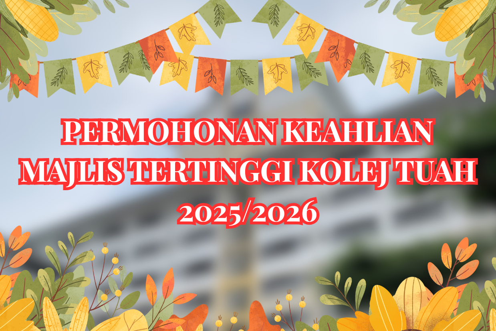
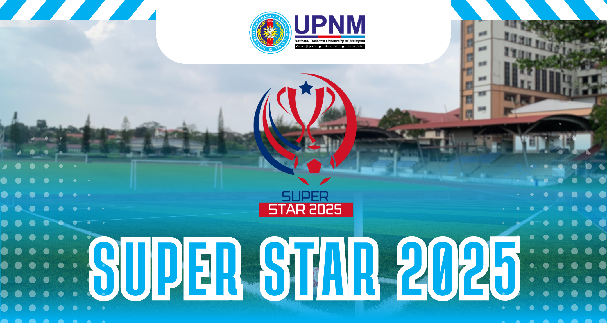
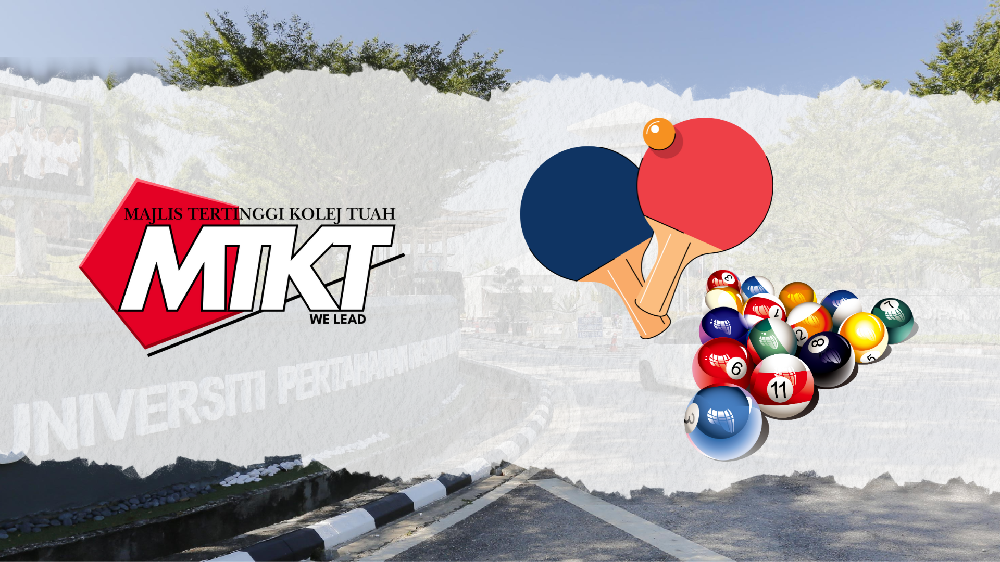
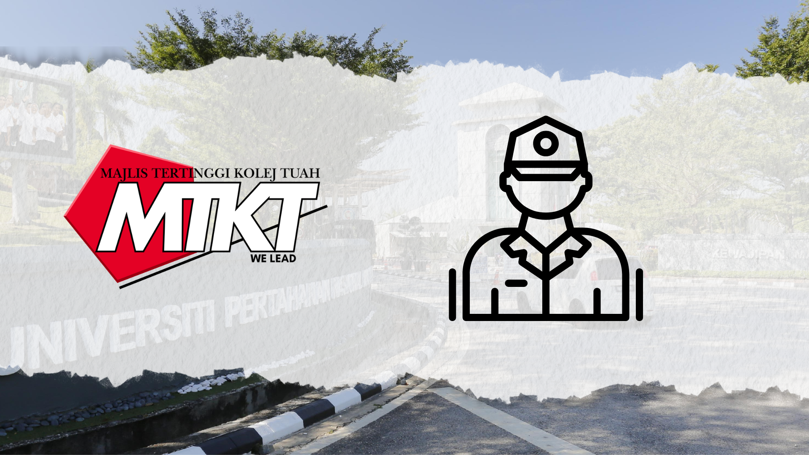
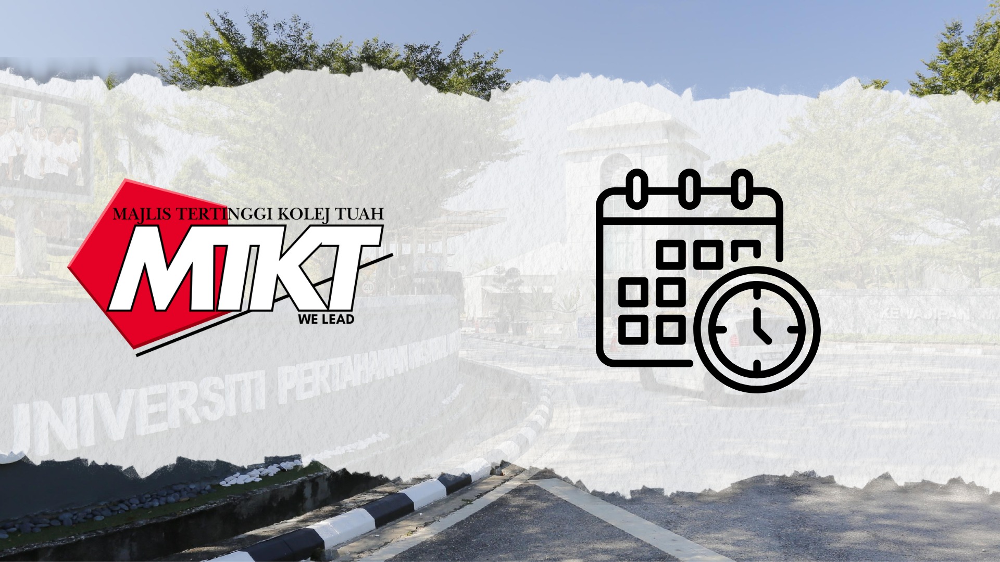
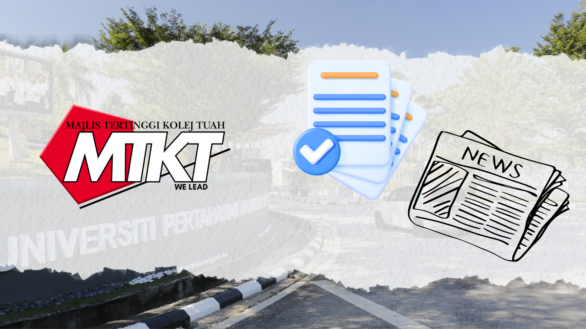

Majlis Tertinggi Kolej Tuah (MTKT) menyelaras aktiviti pelajar, mengeratkan hubungan antara pelajar dan pengurusan, serta mempromosikan kepimpinan, perpaduan, dan kerjasama dalam komuniti Kolej Tuah.
Dapatkan maklumat lanjut berkaitan kami melalui pautan-pautan di bawah.

Majlis Tertinggi Kolej Tuah membuka peluang kepada mahasiswa/i yang bersemangat, berdaya saing dan berjiwa kepimpinan untuk menyertai kami sebagai ahli baharu. Ini merupakan platform terbaik untuk anda mengasah kemahiran organisasi, komunikasi dan kepimpinan, serta menyumbang secara aktif dalam pembangunan sahsiah dan kebajikan pelajar kolej.


Membolehkan pelajar dan staf Kolej Tuah untuk membuat tempahan bagi menggunakan kemudahan bilik rekreasi bagi tujuan riadah dan aktiviti sosial. Sila rujuk sistem tempahan ini untuk memilih tarikh dan waktu yang sesuai, serta memastikan penggunaan bilik rekreasi dilakukan dengan teratur dan mengikut peraturan yang ditetapkan.

Merupakan individu yang diberi tanggungjawab untuk memastikan kelancaran dan keselamatan aktiviti harian di Kolej Tuah. Felo ini bertugas sebagai pemantau, penyelia, dan penghubung antara pelajar dan pihak pengurusan, serta memastikan peraturan kolej dipatuhi. Mereka juga berperanan dalam memberikan sokongan kepada pelajar dan membantu menyelesaikan sebarang isu yang timbul sepanjang tempoh perkhidmatan mereka.

Menyediakan jadual dan maklumat terkini tentang semua acara, aktiviti, dan program yang dianjurkan oleh Majlis Tertinggi Kolej Tuah. Pengunjung boleh merujuk takwim ini untuk mendapatkan tarikh, lokasi, dan butiran penting mengenai program-program yang akan datang, serta memastikan penyertaan mereka dalam setiap aktiviti yang dianjurkan.

Berita/Arkib MTKT memaparkan informasi terkini dan rekod penting mengenai aktiviti, program, serta inisiatif yang dijalankan oleh Majlis Tertinggi Kolej Tuah. Di sini, pengunjung boleh mengakses artikel, laporan, dan pengumuman yang berkaitan dengan perkembangan serta pencapaian kolej, sebagai rujukan untuk menyokong kemajuan akademik dan sosial pelajar.
Sebarang aduan/pertanyaan boleh diajukan melalui borang di bawah: